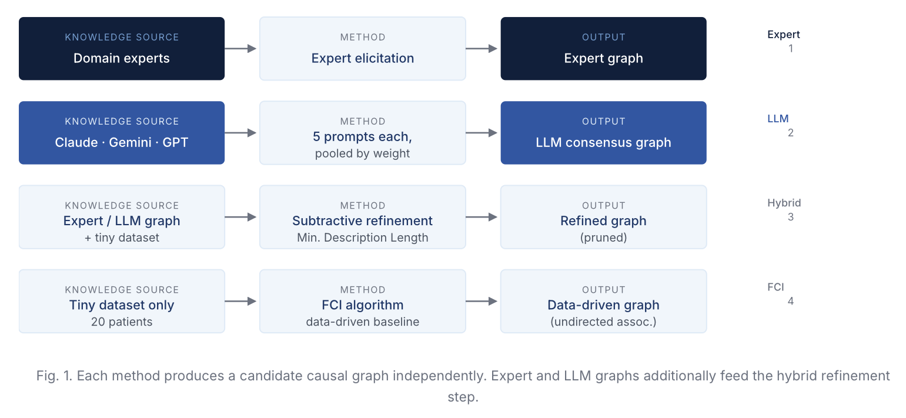

Causal Models with Tiny Data: Rural People Living with Dementia
Ranveer Singh, Saurabh Mathur, Kavimayil P. Komarasamy, Ameet Soni, Cliff Whetung, Wayne Warry, Kristen Jacklin, Melissa Blind, Sriraam Natarajan · AIME 2026
We asked domain experts and three LLMs to construct causal graphs for life-space mobility in rural dementia patients. They agreed on most edges, but disagreed on one that reveals a fundamentally different view of what matters most in dementia care. When tested against real data, none fit well, but they failed in different ways.
Problem: Reasoning About Interventions Without Enough Data
Life-space mobility captures a person's physical and social environment, movement, and daily activities. A decrease in life-space is associated with declining health in older adults, including cognitive decline. But Life-Space Assessments (LSAs) have mostly focused on urban populations, limiting their applicability to rural or Indigenous settings, where dementia risk is higher.
Developing interventions for these populations requires causally modeling the relationship between life-space mobility and relevant demographic and environmental variables — a particularly hard problem, since the data needed for standard causal discovery doesn't exist.
Approach: Four Methods for Causal Graph Construction
We consider a tiny dataset of 20 patients in rural and Indigenous communities in northern Minnesota, USA, and Ontario, Canada, and compare four approaches for building causal graphs, both structurally and on empirical validity.

Fig. 1. Causal graph construction methods, including expert elicitation (1), LLM consensus (Claude, Gemini, GPT) (2), hybrid subtractive refinement (3), and a data-driven FCI baseline (4).
Variables (9 boolean features, n=20)
Continuous variables were binarized using expert-provided or sample mean-based thresholds.
| Code | Variable | Source | Prevalence |
|---|---|---|---|
| LS | Life-space score (high) | Life-Space Assessment | 45% |
| TB | Total burden on caregiver (high) | Caregiver diary | 40% |
| ND | Non-routine days (above median) | Caregiver diary | 60% |
| CD | Challenging days (above median) | Caregiver diary | 45% |
| CT | Community type (rural) | Demographic | 55% |
| PS | Patient sex (female) | Demographic | 35% |
| CS | Caregiver sex (female) | Demographic | 65% |
| PE | Patient education (above threshold) | Demographic | 35% |
| CE | Caregiver education (above threshold) | Demographic | 50% |
Findings: Consensus, Contradictions, and Incompatibility with Data
The LLMs agree on six direct causal relationships. Experts agree with five, but invert the sixth in a way that reveals a fundamental difference in modeling perspectives.

Fig. 2. Expert-constructed (left) vs. LLM consensus (right) causal graphs. Dark blue nodes = socioeconomic factors; red arrow = LLM-only inverted key edge. The key structural disagreement: experts place TB→LS; LLMs place LS→TB.
Experts Say
Life-space score (LS) is the final sink. Experts treat LS as the patient outcome to improve, and include sex and education as causal drivers.
LLMs Say
Caregiver burden (TB) is the final sink. LLMs consistently make TB the ultimate outcome, and exclude socioeconomic variables entirely.
This disparity suggests a fundamental difference in modeling perspectives, and may point to the bidirectional nature of the TB–LS relationship, requiring disaggregation across time. LLMs exclude socioeconomic factors — patient sex, caregiver sex, patient education, caregiver education — that experts identify as significant causal drivers.
Empirical validation
We treat each graph as a model predicting conditional independencies (CIs) and test them against the data using the G-test. Since incorrectly assuming independence is more detrimental than missing a true one, we focus on Precision and False Positive Rate (FPR).
| Model | Total CIs | Precision | FPR |
|---|---|---|---|
| Expert | 113 | 0.73 | 0.53 |
| GPT | 45 | 0.67 | 0.48 |
| Claude | 45 | 0.73 | 0.39 |
| Gemini | 23 | 0.70 | 0.33 |
| LLM Consensus | 31 | 0.68 | 0.48 |
| Overall Consensus | 39 | 0.72 | 0.52 |
Refinement eliminated nearly all edges, leaving fewer than three in the final graphs. The data-driven FCI baseline identified no causal edges, only three undirected associations. Neither LLM-generated nor expert-constructed graphs are compatible with the data, but they are incompatible in different ways, illustrating the structural differences between expert- and LLM-based causal models.
Conclusion
Our analysis of the differences among sources of causal knowledge — domain experts, LLMs, and tiny datasets — provides a foundation for hybrid causal models. The TB–LS edge dispute illustrates that LLMs and experts encode meaningfully different assumptions about the primary patient outcome and what drives it. Understanding this interplay is essential for robust clinical decision-support systems in data-scarce, underserved populations. Three open questions follow directly:
- Is the TB–LS edge bidirectional? The disagreement may reflect a genuine feedback loop requiring temporal disaggregation rather than a single directed edge.
- Can high-disagreement regions guide targeted elicitation? The structural differences identified here could solicit more focused expert feedback and build better causal priors.
- How do causal models for rural and Indigenous populations differ from urban ones? Understanding these differences has direct implications for intervention design in underserved communities.
Citation
@inproceedings{singh2026lifespace,
title = {Causal Models with Tiny Data: The Case of Rural People Living with Dementia},
author = {Singh, Ranveer and Mathur, Saurabh and Komarasamy, Kavimayil P.
and Soni, Ameet and Whetung, Cliff and Warry, Wayne
and Jacklin, Kristen and Blind, Melissa and Natarajan, Sriraam},
booktitle = {Proceedings of the 24th International Conference on
Artificial Intelligence in Medicine (AIME)},
year = {2026},
note = {Supported by NIH awards R01NS133142 and 1R21AG072566}
}
Acknowledgements
We gratefully acknowledge the support of NIH awards R01NS133142 and 1R21AG072566.